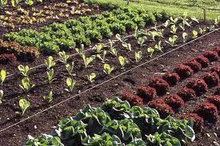

Founded by Chrissy and Chad Cedar, Cedar Hollow Organics began as a small family plot over a century ago. Today, the farm thrives as a USDA-certified organic operation focused on healthy soils, biodiversity, and fresh local produce for our community.
Our mission is to provide organic, sustainably-grown food while educating others on the benefits of responsible farming.
